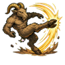
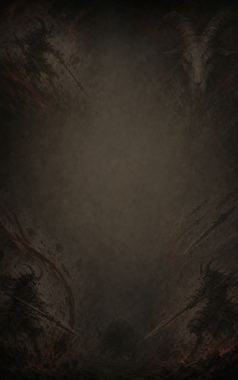
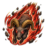
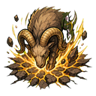
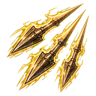
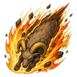
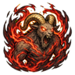

Goat Kick D
A powerful kick with goat legs that sends enemies flying.
| Rank | Chakra | Cooldown | Class level |
|---|---|---|---|
| D | 10 | 10 s | 2 |

Technique trees › Clans and bloodlines
8 techniques · Clan tab
Needs the Kishiyagi gene.

A powerful kick with goat legs that sends enemies flying.
| Rank | Chakra | Cooldown | Class level |
|---|---|---|---|
| D | 10 | 10 s | 2 |
The muscles lock rigid for ten seconds: the user is near-impossible to hurt, though barely able to move.
| Rank | Chakra | Cooldown | Class level |
|---|---|---|---|
| D | 10 | 50 s | 3 |

Charge in a straight line with sharpened horns.
| Rank | Chakra | Cooldown | Class level |
|---|---|---|---|
| C | 20 | 15 s | 5 |
Hurl the knight lance, drilling or spinning, at an enemy.
| Rank | Chakra | Cooldown | Class level |
|---|---|---|---|
| C | 15 | 12 s | 4 |

Strike the ground with the horns: a fissure in a line at C rank, an earthquake all around at B.
| Rank | Chakra | Cooldown | Class level |
|---|---|---|---|
| C | 20 | 20 s | 6 |
| B | 35 | 33 s | 10 |

Three lightning-fast lance strikes on one enemy.
| Rank | Chakra | Cooldown | Class level |
|---|---|---|---|
| B | 30 | 25 s | 9 |

Leap into the sky and fall like a comet, horns first, onto an area. The Devil's Fall from Grace hits harder.
| Rank | Chakra | Cooldown | Class level |
|---|---|---|---|
| B | 35 | 42 s | 10 |
| A | 55 | 58 s | 14 |

An uncontrolled battle trance for a minute: enormous strength, little pain.
| Rank | Chakra | Cooldown | Class level |
|---|---|---|---|
| A | 40 | 250 s | 13 |